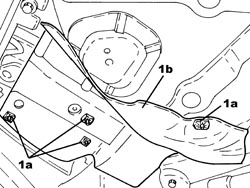
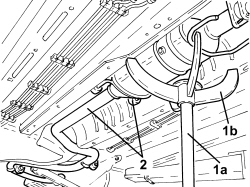

1076A52 EXHAUST PIPE REAR HEAT SHIELD(S) - R.R
- Path
- Procedures > 10 ENGINE > 1076 EXHAUST PIPES AND SILENCERS > 1076A EXHAUST PIPE FASTENINGS AND PROTECTIONS > 1076A52 EXHAUST PIPE REAR HEAT SHIELD(S) - R.R
- Kind
- repair procedure (removal / refitting; the operation number is the code)
- Applies to
- all engines; all production periods
- Interactive page
- https://sloeber94.github.io/elrnDB-aBrrSpdr/en/#/946001954
Applies to: engines: 3.2 JTS; all production periods
 Removing
Removing
 Refitting
RefittingOp. 1076B22 REAR EXHAUST SILENCERS - LEFT OR RIGHT - R.R.
1. Undo the fastenings (1a) and remove the heat shield (1b).

Applies to: engines: 3.2 JTS; all production periods
- Work in the same way on the other guard.
Applies to: engines: 3.2 JTS; all production periods
Refitting
Removing- Place the heat shield back in its housing and fit it on the bodyshell using the fastenings.
- Work in the same way on the other guard.
Applies to: engines: 2.2 JTS; all production periods
Removing
Refitting- Position the vehicle on a lift.
Op. 1076B22 REAR EXHAUST SILENCERS - LEFT OR RIGHT - R.R.
1. Undo the clips (1a) and remove the rear heat shields (1b) for the exhaust pipe.

Applies to: engines: 2.2 JTS; all production periods
Refitting
Removing- Place the exhaust silencer rear heat shields in position and secure them using the clips.
Op. 1076B22 REAR EXHAUST SILENCERS - LEFT OR RIGHT - R.R.
- Remove the vehicle from the lift.
Applies to: engines: 2.4 JTD 20v; all production periods
Removing
Refitting1. Position a hydraulic jack (1a) equipped with a suitable tool (1b) for supporting the particle filter.
2. Release from the flexible mountings and lower the exhaust pipe assembly.

Applies to: engines: 2.4 JTD 20v; all production periods
1. Undo the fastenings (1a) and remove the heat shield (1b).

Applies to: engines: 2.4 JTD 20v; all production periods
Refitting
Removing- Place the exhaust pipe assembly in its housing and secure it to the flexible mountings.
- Remove the hydraulic jack fitted with the suitable tool used for supporting the particle filter.